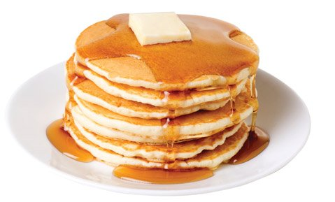
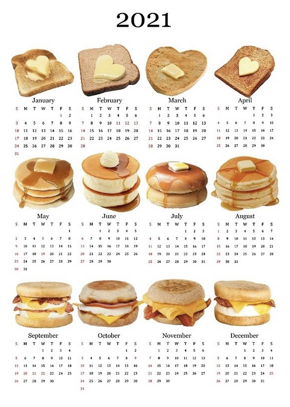

A pancake (or hotcake, griddlecake, or flapjack, not to be confused with oat bar flapjacks) is a flat cake, often thin and round, prepared from a starch-based batter that may contain eggs, milk and butter and cooked on a hot surface such as a griddle or frying pan, often frying with oil or butter. Archaeological evidence suggests that pancakes were probably the earliest and most widespread cereal food eaten in prehistoric societies.
 The pancake's shape and structure varies worldwide. In the United Kingdom, pancakes are often unleavened and resemble a crêpe.[2] In North America, a leavening agent is used (typically baking powder) creating a thick fluffy pancake. A crêpe is a thin Breton pancake of French origin cooked on one or both sides in a special pan or crepe maker to achieve a lacelike network of fine bubbles. A well-known variation originating from southeast Europe is a palačinke, a thin moist pancake fried on both sides and filled with jam, cream cheese, chocolate, or ground walnuts, but many other fillings—sweet or savoury—can also be used.